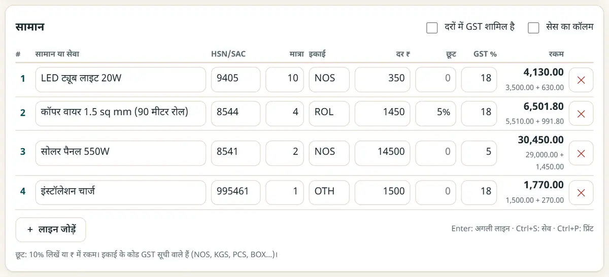
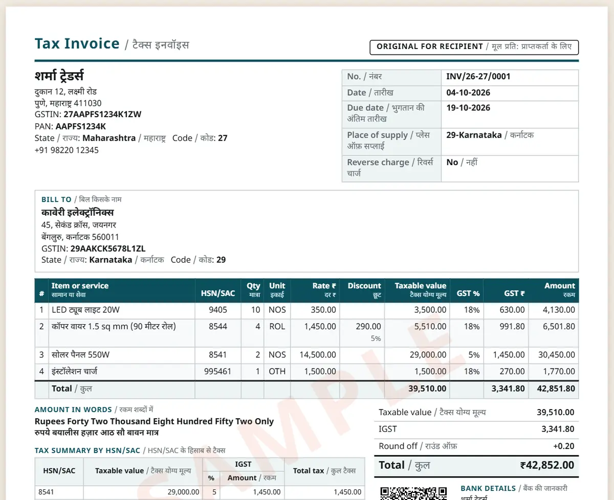

GST इनवॉइस फॉर्मेट: GST बिल मुफ़्त में कैसे बनाएँ
GST टैक्स इनवॉइस में कुछ ज़रूरी जानकारी होनी चाहिए, और टैक्स का बँटवारा इस पर निर्भर है कि ख़रीदार कहाँ है। क्या-क्या लिखना है, और बिना अकाउंटिंग सॉफ़्टवेयर के कुछ मिनटों में सही इनवॉइस कैसे बनाएँ, यहाँ देखिए।
छोटा जवाब
GST टैक्स इनवॉइस में आपका नाम, पता और GSTIN, अलग इनवॉइस नंबर और तारीख़, ख़रीदार की जानकारी (B2B में उसका GSTIN), सप्लाई की जगह, हर आइटम का HSN या SAC कोड, मात्रा, रेट और टैक्स योग्य मूल्य, GST (एक ही राज्य में CGST + SGST, दूसरे राज्य में IGST), कुल रक़म और हस्ताक्षर होते हैं। GST इनवॉइस और कोटेशन मेकर टैक्स का बँटवारा आपके लिए ख़ुद करता है।
6 स्टेप में GST इनवॉइस बनाएँ
-
अपने बिज़नेस की जानकारी एक बार भरें
GST इनवॉइस और कोटेशन मेकर खोलें और “मेरा कारोबार” भरें: बिज़नेस का नाम, पता, GSTIN, बैंक खाता, UPI ID, लोगो और हस्ताक्षर। हर इनवॉइस में ये अपने-आप आते हैं।
-
दस्तावेज़ का प्रकार चुनें
“टैक्स इनवॉइस”, “कोटेशन”, “बिल ऑफ़ सप्लाई”, डिलीवरी चालान या पेमेंट रसीद चुनें। हर वित्त वर्ष के इनवॉइस नंबर क्रम से चलते हैं।
-
ग्राहक जोड़ें
ग्राहक का GSTIN लिखें या उसका राज्य चुनें। एक ही राज्य होने पर ऐप ख़ुद CGST + SGST और दूसरे राज्य के लिए IGST लगाता है।
-
आइटम जोड़ें
हर आइटम का HSN या SAC कोड, मात्रा, यूनिट, रेट और GST दर (0, 0.25, 3, 5, 18 या 40%) लिखें। सेव किए आइटम अगली बार अपने-आप भर जाते हैं।

HSN कोड, मात्रा, रेट और GST के साथ आइटम जोड़ें। -
टोटल जाँचें
इनवॉइस में टैक्स योग्य मूल्य, हर दर का टैक्स, HSN सारांश और शब्दों में कुल रक़म दिखती है। UPI QR चालू करें, ताकि ग्राहक ठीक उतनी रक़म चुका सके।
-
प्रिंट करें या PDF सेव करें
“प्रिंट / PDF” दबाकर Save as PDF चुनें और ईमेल या WhatsApp से भेजें। महीने के आख़िर में अपने अकाउंटेंट के लिए इनवॉइस रजिस्टर डाउनलोड करें।

टैक्स के बँटवारे और टोटल के साथ तैयार टैक्स इनवॉइस।
GST टैक्स इनवॉइस में ज़रूरी जानकारी
- आपका नाम, पता और GSTIN, और तारीख़ के साथ अलग इनवॉइस नंबर (16 अक्षरों तक)।
- ख़रीदार का नाम और पता, B2B बिक्री में उसका GSTIN, और राज्य के नाम के साथ सप्लाई की जगह।
- हर आइटम के लिए: HSN या SAC कोड, विवरण, मात्रा, रेट, टैक्स योग्य मूल्य, GST दर और CGST, SGST या IGST की रक़म।
- टैक्स रिवर्स चार्ज पर देय है या नहीं, और सप्लायर या अधिकृत व्यक्ति के हस्ताक्षर।
- HSN के अंक: ₹5 करोड़ तक के टर्नओवर पर B2B इनवॉइस में 4 अंक, और ₹5 करोड़ से ज़्यादा पर 6 अंक।
यह गाइड सामान्य जानकारी है, टैक्स या क़ानूनी सलाह नहीं। अपने मामले के लिए किसी टैक्स जानकार से पूछें।
नए मुफ़्त टूल और हिंदी में AI के पाठ पाएँ
हमारी ईमेल लिस्ट से जुड़ें: नए मुफ़्त ऐप, नई गाइड और AI पर हिंदी वीडियो पाठ की जानकारी आपको मिलती रहेगी। कोई स्पैम नहीं।
सिर्फ़ वयस्कों (18+) के लिए। आप कभी भी नाम हटवा सकते हैं।
हम ये टूल क्यों सुझाते हैं
- सबके लिए मुफ़्त: न विज्ञापन, न साइन-अप, न कोई पेड प्लान।
- प्राइवेट: आपकी फ़ाइलें और जानकारी आपके अपने डिवाइस पर ही रहती हैं।
- फ़ोन, लैपटॉप या स्मार्टबोर्ड पर चलते हैं, और एक बार खुलने के बाद बिना इंटरनेट भी।
- हिंदी समेत 12 भाषाओं में।
वीडियो से सीखना पसंद है? हमारे YouTube चैनल पर AI और मुफ़्त टूल्स के हिंदी पाठ देखें।
अक्सर पूछे जाने वाले सवाल
CGST, SGST और IGST में क्या फ़र्क़ है?
अगर बेचने वाला और ख़रीदार एक ही राज्य में हैं, तो GST आधा-आधा CGST और SGST में बँटता है। अलग-अलग राज्यों में हों, तो पूरा GST IGST होता है। ऐप यह सप्लाई की जगह से तय करता है।
टैक्स इनवॉइस की जगह बिल ऑफ़ सप्लाई कब बनाते हैं?
कंपोज़िशन डीलर, और GST से छूट वाले सामान या सेवाएँ बेचने वाले बिल ऑफ़ सप्लाई बनाते हैं, जिसमें GST नहीं दिखता। पक्का न हो तो अपने अकाउंटेंट से पूछें।
क्या इससे ई-इनवॉइस (IRN) या ई-वे बिल बनता है?
नहीं। यह फॉर्मेट बनाने में मदद करता है। IRN वाला ई-इनवॉइस ₹5 करोड़ से ज़्यादा टर्नओवर पर ज़रूरी है, और ई-वे बिल सरकारी पोर्टल पर बनता है।
क्या मेरे ग्राहकों और दामों की जानकारी सुरक्षित है?
हाँ। बिज़नेस की जानकारी, ग्राहक और इनवॉइस सिर्फ़ आपके डिवाइस के ब्राउज़र में सेव होते हैं। एक कॉपी रखने के लिए बैकअप फ़ाइल बना लें।
कौन-सी GST दरें इस्तेमाल कर सकते हैं?
22 सितंबर 2025 से GST दरें 0, 0.25, 3, 5, 18 और 40% हैं; 12% और 28% वाले स्लैब तभी ख़त्म हो गए। अपने सामान की सही दर और HSN कोड अकाउंटेंट से पक्का कर लें।
काम की लगी?
इसे किसी दोस्त, साथियों या अपने स्कूल के WhatsApp ग्रुप में भेजें।